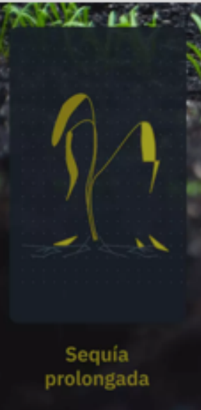
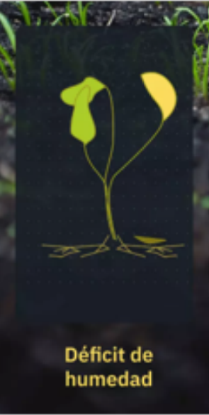
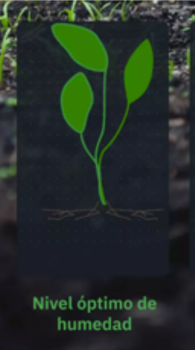
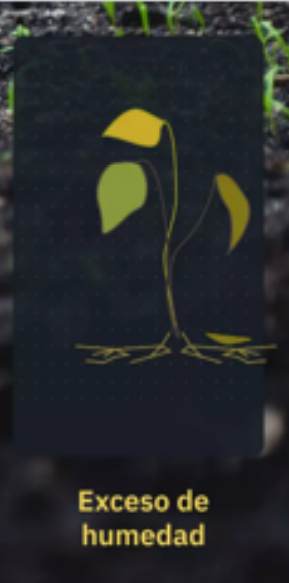

Sistema de Monitoreo Ambiental - Proyecto Arduino
Desde:
Hasta:
Actualizar
Actualiza todos los datos ingresados y lo que pasa en tiempo real
Histórico de Humedad
   
Promedio de Humedad - Parcela A
Histórico de Humedad del Suelo - Parcela A
⬅️ Regresar